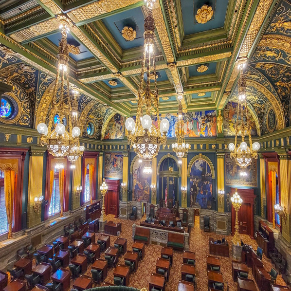
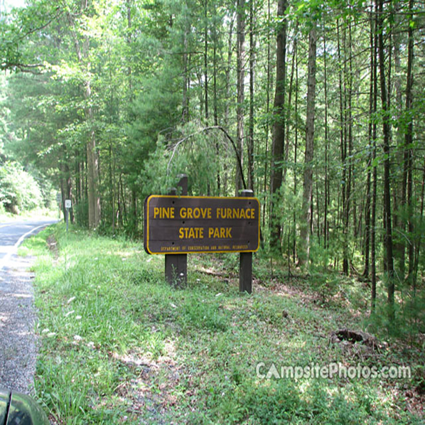
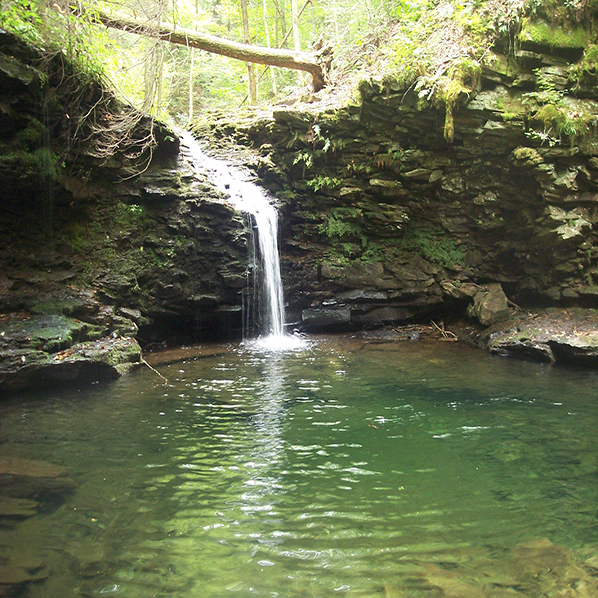
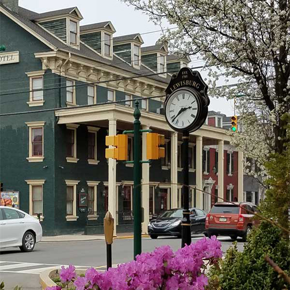

A renowned amusement park featuring exciting rides, live entertainment, and an opportunity to learn about
chocolate-making at Hershey's Chocolate World.
Website:
2. Gettysburg National Military Park:
Site of the pivotal Battle of Gettysburg during the Civil War, offering guided tours, historic monuments,
and a visitor center with exhibits. Website:

3. Pennsylvania State Capitol:
An impressive architectural gem in Harrisburg showcasing exquisite artwork, stunning interiors,
and guided tours to learn about the state's government and history. Website:
4. Raystown Lake:
A scenic reservoir near Huntingdon, offering boating, fishing, hiking, and
camping amid picturesque landscapes and water activities. Website:
5. Railroad Museum of Pennsylvania:
Located in Strasburg, this museum boasts an extensive collection of vintage locomotives,
rail cars, and exhibits, showcasing the rich history of railroading. Website:
6. Central Market York:
The oldest continuously operating farmers' market in the U.S., offering a bustling atmosphere,
local produce, crafts, and diverse food vendors. Website:

7. Pine Grove Furnace State Park:
Serving as the "Gateway to the Appalachian Trail," this park
offers hiking, picnicking, and swimming opportunities, along with
historic features and natural beauty. Website:

8. Worlds End State Park:
Situated in the Endless Mountains, this park is known for its rugged beauty, with hiking trails,
waterfalls, and breathtaking views of the Loyalsock Creek Gorge. Website:

9. Lewisburg:
A charming small town known for its historic downtown, offering boutique shops, galleries,
and restaurants, as well as attractions like the Lewisburg Farmers Market and Packwood House Museum.
Website:
10. Pennsylvania Grand Canyon:
Also known as Pine Creek Gorge, this natural wonder features stunning vistas,
hiking trails, and opportunities for outdoor recreation. Website: